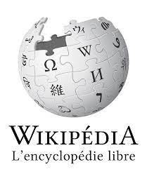

-
Avant l’internet, les réseaux de télécommunication était limité à un ordinateur centralisé connecté par des câbles à des terminaux.

-
Lancement du projet ARPANET ( Advanced Research Projects Agency Network) par le ARPA (Advanced Research Projects Agency) et financé by le U.S. Defense Department.
-
Les deux premières lettres envoyées d’une unité centrale a une autre.
-
Les premiers 23 ordinateurs connectés sont reliés sur ARPANET et envoi du premier courrier par Ray Tomlinson.
-
Adoption du protocole TCP(transmission control protocole) et IP(internet protocol).
lien pour plus d'information -
Tim Berners Lee et Robert Cailliau, informaticiens au CERN (Centre Européen de la Recherche Nucléaire) entament leur projet de réseau de partage d’information et de savoir entre universités et laboratoires.Le NeXT Machine est utilisé par Tim Berners-Lee pour développer son idée.

-
WorldWideWeb:Proposal for a HyperText Project URL (Uniform Resource Locator)
HTTP (Hypertext Transfer Protocol);
HTML (Hypertext Markup Language);
sont présentés dans un document officiel.
Lien pour plus d'information
.jpg)
-
Le premier serveur hors-Cern est installé à l’Université de Stanford. Le Web fonctionne sur X Windows
-
Apparition du premier navigateur web “NCSA Mosaic”. Le système est adapté pour les environnements PC et Macintosh. Don à l’humanité: personne ne possède le Web, tout le monde peut y publier du contenu sans demander la permission à personne.
Lien pour plus d'information

-
Première Conférence Internationale sur le WWW. A la fin de l’année le Web compte 2000 serveurs et 10 millions d’utilisateurs. Tim Berners-Lee quitte le CERN pour former le Consortium International du Web afin de protéger son invention de la privatisation.
-
L’INRIA (Institut National de Recherche Informatique et Automatique devient le premier hébergeur européen du Consortium. Création de Javascript.
-
Premier Réseau Social (SixDegree)
-
Début de Wikipedia
 -
Fondation de Facebook
-
Creation de Youtube